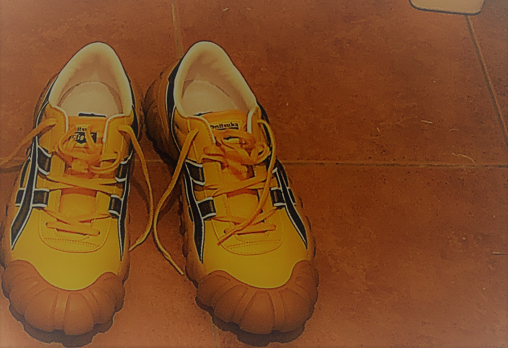

sawalife!
Sawalife!
新しい靴を買った

今日は丸一日，自由な時間が取れたので，約一年ぶりに難波へ買い物に出かけてきた。
今は，コロナウイルスの影響もあってか，以前来た時と比べ，なんだか街は閑散としていたが，
元々騒がしいところが苦手な自分にとっては，ちょうどぐらいだった。しかも，1人で歩くときには
大体，Apple製のAirpodsを付けながら歩くので，ほんとに落ち着いた買い物をすることができた。
さて，今回の買い物ではタイトルにもあるように，靴を購入したのだが，正直，今回購入した靴には，
当然うれしさもあるのだが，少し後悔している。というのも，この靴，めちゃくちゃ目立つのである。
写真を見ただけでは分からないのだが，とにかくラバー部分の大きさが半端なくデカい（笑）
店で試し履きした時にはなんとも思わなかったのだが，家へ帰って，もう一度履いてみると，これがかなりデカかった（笑）
正直，今はこの靴を履いて出かけることに抵抗すら感じる。「こいつの靴めちゃデカない？」と周りの人から思われるかもしれない（たぶん思われる）という恐怖感があるからである。
買う前と後での商品に対する感じ方って何でここまで変わってしまうのか… 難しい（笑）
まあ，この靴のデカさの話は実際に履いて出かけてみないと分からないので，また，後日にみていくことにする。